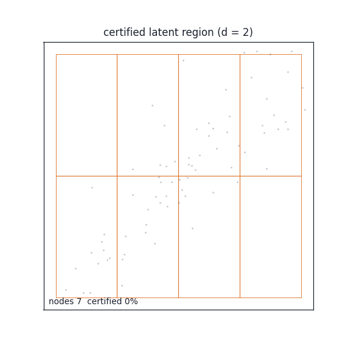
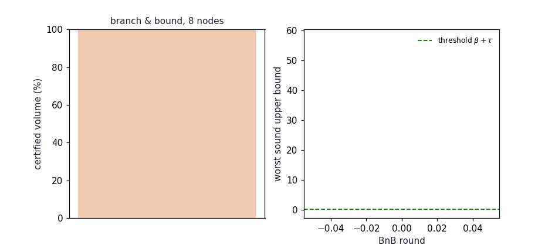

stochastic‑latent‑bounds
Sound stochastic Lyapunov certificates for high‑dimensional physical systems, via invertible latent transports
Welcome!Getting Started
Installation
Reproduce the results
How it works
The factorised certificate
The noise floor, honestly
What is verified, what is measured
Real physical data
Results
Help
Welcome!

T, the certified
η-region (green) and the noise ball promised by the certificate. Generated by
tools/gifgen.py from the committed arm4 checkpoint.stochastic-latent-bounds turns a stochastic physical system into coordinates where a Lyapunov certificate is searchable: a learned, exactly invertible transport factors the state into a low‑dimensional certified factor and a transversal residual, and the certificate is verified by interval branch‑and‑bound — never assumed from samples.
stochastic Lyapunovinterval arithmeticinvertible transportsbranch & boundworld models
Classical certification does not scale: sum‑of‑squares and SMT methods collapse
under the curse of dimensionality, while neural Lyapunov functions are usually
validated only at sampled points. Every number published on this site is rendered
from committed results/*.json produced by the committed code —
the site cannot drift from what the experiments actually did.
Getting Started
Installation
git clone https://github.com/sehajr-singhs/stochastic-latent-bounds
cd stochastic-latent-bounds
pip install torch pytest
# soundness + tightness test suite (CPU, float64)
python -m pytest tests/ -qReproduce the results
python experiments/exp1_main.py # factor vs full scaling (N-link arms)
python experiments/exp2_shadow.py # gated hot-swap under plant drift
python experiments/exp3_tightness.py # tight trace vs Cauchy-Schwarz
python experiments/exp4_realtrend.py # NASA C-MAPSS fleet (Kaggle)
python experiments/exp5_airquality.py # Beijing air quality (Kaggle)
python tools/figures.py # regenerate figures from results/How it works
The factorised certificate
An exactly invertible transport T (affine coupling layers,
T(x*)=0 at the equilibrium) maps the physical state x to
latent coordinates y=(eta, rho) — nothing is discarded, the map is a
diffeomorphism. A certificate
is then verified over a region by worst‑first branch‑and‑bound. Factor mode searches only the d‑dimensional η‑box (the ρ‑side is handled by the Lyapunov metric in closed form); full mode searches all D coordinates. The soundness of the bound is what makes the difference a theorem, not a tune:

L W + α W, green boxes are certified against
β+tol, grey boxes are resolved. Generated by
tools/gifgen.py from the same committed checkpoint.
The bound on L W + α W is computed with sound enclosures: an exact
interval Ito trace ½ tr(BBᴹ Hess W), centered (mean‑value) drift
forms whose residual enclosure is a cascade (exact zeros on transversal
columns, remainder quadratic in box radius), and outward rounding everywhere. Both
choices make the bound converge under subdivision; the interval trace even converges
to the exact generator on degenerate boxes, which is what makes certification near
the origin possible at all.
The noise floor, honestly
With additive process noise the origin is not an equilibrium of the SDE:
paths leave it immediately, so L W(0) = β > 0 and the classical
condition certifies the empty set, always. The attainable statement is the
thresholded certificate
i.e. exponential practical stability to an explicit noise ball of stationary radius
(β+tol)/α. β is evaluated exactly at the origin;
tol is explicit slack, reported rather than hidden.
What is verified, what is measured
- Soundness is tested directly: across random boxes the sound bound must dominate the exact generator at every sampled interior point (
tests/test_soundness.py). - Tightness is tested directly: a point box at the origin must reproduce β to 1e-6 — an assertion the Cauchy‑Schwarz bound structurally cannot pass.
- The world model is scored against the analytic Ito push‑forward of the identified plant, so the learned‑vs‑exact gap is measured, including the Ito correction term most latent models silently absorb.
- Online adaptation runs a shadow network behind a certified acceptance gate; unsafe swaps after a drift change are counted against the exact plant generator, so the gate's value is falsifiable.
Real physical data
Two real datasets, one pipeline, zero domain‑specific code:
- NASA C‑MAPSS FD001 (turbofan fleet, 100 engines run to failure): per‑era Ornstein‑Uhlenbeck plants identified from real sensor trajectories; the aging drift moves the attractor 2.82 sd. Under that real drift the sound gate made 0 unsafe swaps while the naive gate accepted all 8 candidates — every one unsafe.
- Beijing PRSA (multi‑site air quality, hourly 2013–2017): the drift event is the real seasonal regime shift (municipal heating season); the identified attractor moves 3.85 sd between regimes.
Results

Full tables — scaling, hot‑swap traces, the effort ladder and both real‑data experiments — are on the results page. The mathematics (including the d‑vs‑D effort proposition) is in mathematics; the module map is in the API page.
Help
The certificate, the sound‑bound constructions and the counterexample‑guided retraining loop are documented in mathematics; module‑by‑module roles in the API map. Source: github.com/sehajr-singhs/stochastic-latent-bounds.